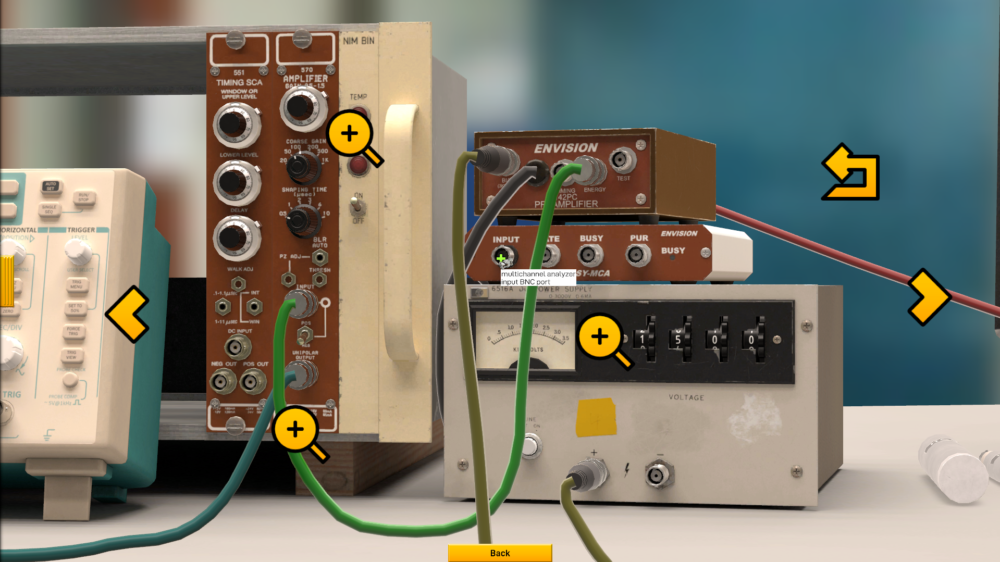
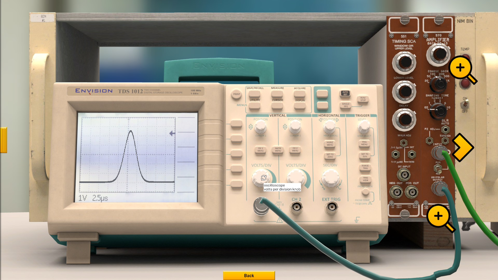
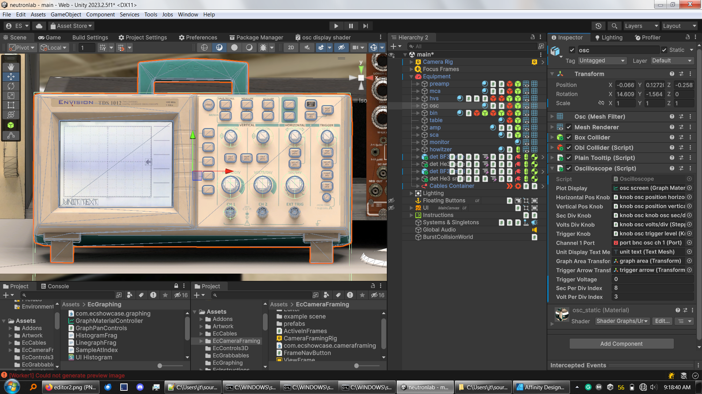
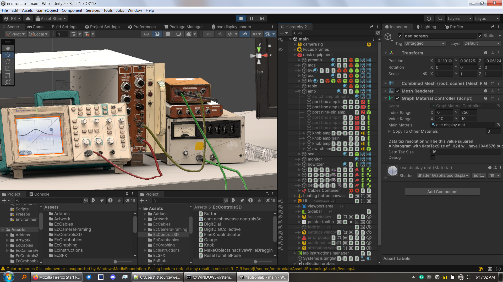
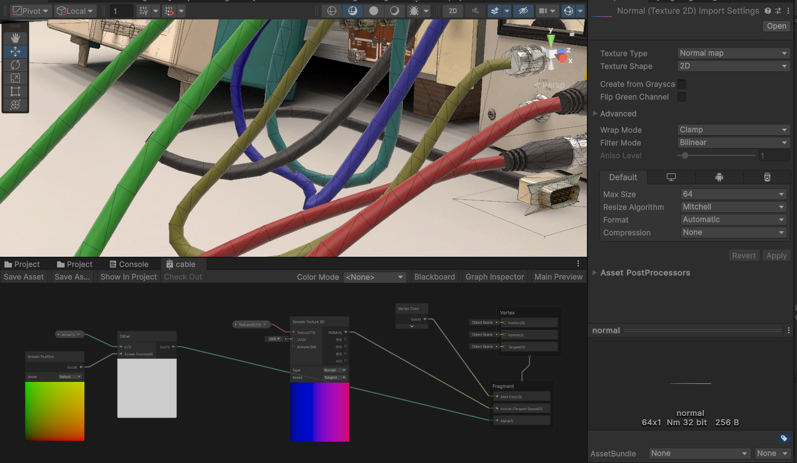
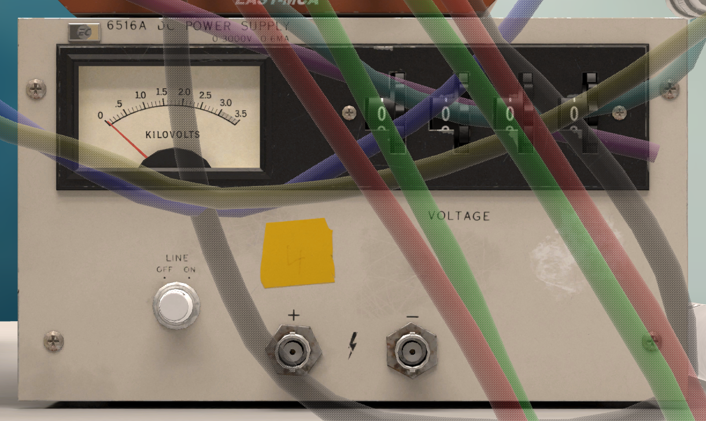
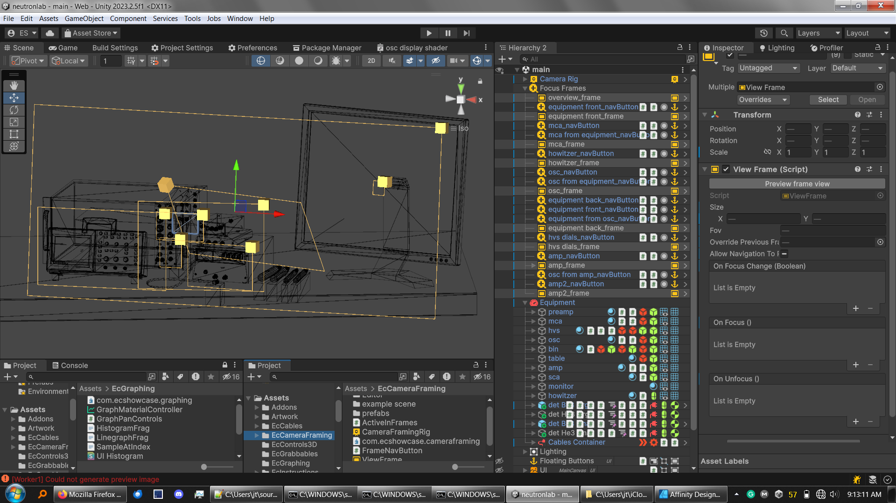

nuclear engineering
virtual education
Built in Unity. Mostly solo project - responsible for nearly all artwork and programming.


tl;dr
This is an educational virtual lab project where I'm responsible for all design, artwork, and (nearly all) programming. I built the lab on Unity and created the visuals with Blender, Marmoset Toolbag, Substance Painter, and Affinity Designer. The project was led by Purdue University Prof. Stylianos Chatzidakis to increase access to curriculum-necessary lab equipment.
Completed late 2023
3D artwork
These models are tightly integrated into the program since I am also responsible for the Unity project. Some examples:
- The models have less texel density on faces that I know are mostly obscured or unseen.
- Lighting is baked directly into equipment textures using Blender / Cycles since each only appears once. Static elements use these textures with a simple unlit material.
- I created specific reflection cubemaps for many non-static buttons and dials to eliminate incorrect specular highlights.
- Some non-static draggable objects cast custom soft-shadow decals.
- I prepared the models for the line graph & histogram shaders I wrote.
After learning with this virtual lab, a student should easily be able to use the real equipment, as these virtual tools are close matches to their real counterparts both visually and functionally. I made several visits to the lab while working on these assets to use the real equipment myself and record plenty of reference material.
The lab runs in a browser and is optimized for low-spec devices such as Chromebooks and tablets. There are max 25,000 triangles rendered across 22 draw events. The lab's load size is just under 50mb.
programming
Built on Unity, I'm responsible for most of this project's scripting. This includes the UI, 3D equipment controls, object manipulation, cable management, camera framing, and data graphing. Like the 3D artwork, everything is profiled and optimized for low-spec devices. I had help with simulating the equipment, and the cable physics come from Obi Rope.
Signal processing and equipment simulation:
All of the lab tools are fully functional and process simulated signals. Together with Prof. Chatzidakis and his team, we modeled these devices in C#. Signal processing is currently done on the CPU built into WebAssembly (although I want to reimplement these as shaders in the future).
The lab targets 100,000 samples per second, each of those being signals processed by the equipment. As a Unity web app targeting maximum compatibility, its limited to a single CPU core with no support for Unity's BURST compiler. Performance is more than acceptable, but it took plenty of profiling to get there.
Signals are function call stacks that the user builds by connecting up equipment. Signal structs implement an interface with a function that takes float time (seconds) and returns a float energy (voltage). These are not pure functions as the equipment controls drive equipment-specific variables that affect the output of these functions. I avoid using delegates as they can easily create garbage if used improperly and other developers may expand the lab in the future.
Cable visuals and performance:
The cables, with physics by Obi Rope, presented many problems.
Mesh updates are extremely expensive according to my profiling. Instead of a mesh cylinder, I use a flat ribbon with a cylindrical normal texture to minimize the vertices Obi needs to move. I eventually want to add end cap vertices for a better cylinder look.
I randomize cable colors so users can keep track of what is connected to what. All the cables use a single material and I change the vertex colors on cable meshes when they spawn.
The cables also become semi-transparent via dithering when they may obscure important elements.
User experience in 3D:
Building good UX around the rest of the equipment's 3D controls was also a challenge.
To prevent users from losing objects, the user cannot drop objects behind UI elements, outside of the camera bounds, or while the camera is moving. Held objects position using rigidbody-casts so that they don't visually clip into their surroundings.
Supporting a variety of devices means supporting a variety of aspect ratios. I wrote an editor tool for creating camera 'frames' which position the camera so that everything fits into view regardless of aspect ratio.
The controls must be large enough for the user to easily interact with them, so the different camera frames are arranged to keep these controls at sane sizes. The equipment is also arranged to keep related frames and controls within reach of one another.